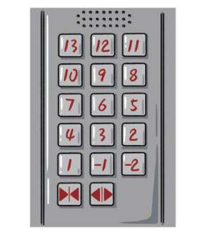
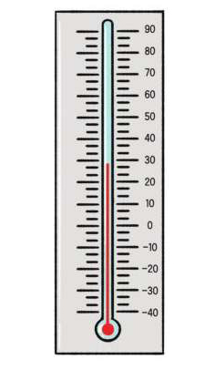
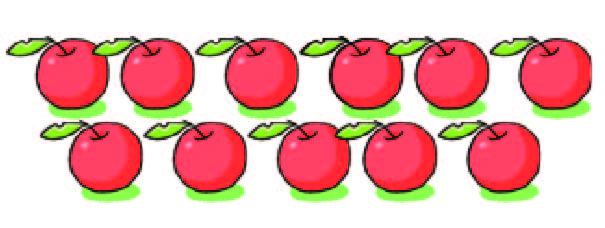
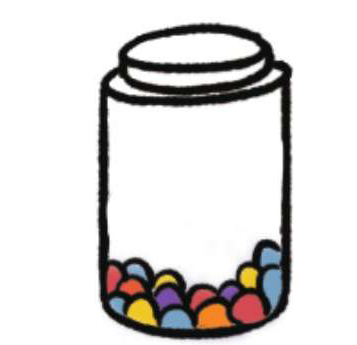
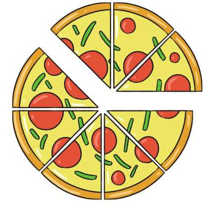
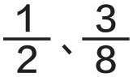

正数与负数
正数是大于0的数。
负数是小于0的数。

整数与自然数
整数包含正整数、0和负整数。
自然数包含正整数和0。

奇数与偶数
不能被2整除的数叫作奇数。
能被2整除的数叫作偶数。

因数与倍数
整数A除以整数B（B≠0）的商正好是整数C而没有余数，那么B和C是A的因数。
整数A能够被整数B整除，那么整数A就是整数B的倍数。

质数与合数
质数只有1和它本身两个因数。合数除了1和它本身，还有别的因数。
小数、分数和百分数

所有分数都能写成小数，小数由整数部分、小数点和小数部分组成。如0.6、22.8。
把一个整体（或单位“1”）平均分成若干份，表示这样一份或几份的数叫作分数，如

表示一个数是另一个数的百分之几的数叫作百分数，如2%、50%。